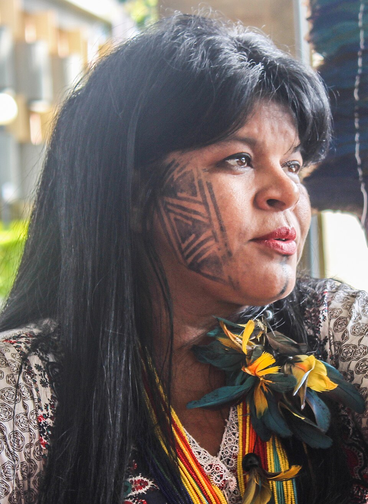

Organização de base
Fortalece sua atuação em entidades indígenas do Maranhão e da Amazônia.

1974 — presente
Liderança indígena, professora e ativista
Defender os territórios indígenas é proteger vidas, culturas e o equilíbrio ambiental de todos.
Organização de base e presença indígena nos espaços de decisão.
Sônia Guajajara, do povo Guajajara/Tentehar, construiu uma trajetória de mobilização nacional e internacional. Sua atuação une defesa territorial, justiça climática e participação política.
Consultar Câmara dos DeputadosNascida na Terra Indígena Arariboia, no Maranhão, Sônia estudou Letras e Enfermagem. Começou sua atuação em organizações indígenas locais e estaduais.
Como coordenadora executiva da Articulação dos Povos Indígenas do Brasil, tornou-se uma das principais vozes do movimento indígena em campanhas pela demarcação e contra violações territoriais.
Foi candidata à Vice-Presidência da República em 2018, eleita deputada federal em 2022 e assumiu, em 2023, o primeiro Ministério dos Povos Indígenas do país.
Consultar Câmara dos DeputadosMomentos que ajudam a compreender a atuação de Sônia Guajajara.
Fortalece sua atuação em entidades indígenas do Maranhão e da Amazônia.
Ganha projeção na defesa dos territórios e na articulação dos povos indígenas.
Torna-se a primeira pessoa indígena em uma chapa presidencial no Brasil.
Assume a pasta criada para coordenar políticas públicas indígenas.
Fonte dos acontecimentos: Câmara dos Deputados.
Sônia ampliou a presença indígena no debate político brasileiro e internacional.
Contribuiu para reunir povos de diferentes regiões em mobilizações comuns por direitos constitucionais.
Relacionou a proteção dos territórios indígenas à conservação ambiental e ao enfrentamento da crise climática.
Abriu caminhos inéditos para a presença indígena em eleições e no primeiro escalão do governo federal.
Conteúdo baseado em Câmara dos Deputados.
Um registro visual que acompanha a trajetória de Sônia Guajajara.
Referências usadas para organizar esta trajetória e caminhos para aprofundar a pesquisa.
Câmara dos Deputados
Ministério dos Povos Indígenas
Wikimedia Commons
Explore as 10 trajetórias de mulheres negras e as 10 trajetórias de mulheres indígenas.